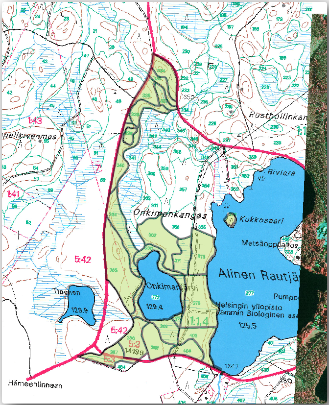

Unless you are going to use your georeferenced map as a simple background image,
the next natural step is to digitize elements from it. You have already done so
in the exercises about creating vector data in သင်ခန်းစာ- Vector Dataset အသစ်တစ်ခုဖန်တီးခြင်း (Lesson: Creating a New Vector Dataset),
when you digitized the school fields. In this lesson, you are going to digitize
the forest stands’ borders that appear in the map as green lines but instead of
doing it using an aerial image, you will use your georeferenced map.
The goal for this lesson: Learn a technique to help the digitizing task,
digitizing forest stands and finally adding the inventory data to them.
14.3.1. ★☆☆ Follow Along: Extracting the Forest Stands Borders
Open your map_digitizing.qgs project in QGIS, that you saved from the
previous lesson.
Once you have scanned and georeferenced your map you could start to digitize
directly by looking at the image as a guide. That would most likely be the way
to go if the image you are going to digitize from is, for example, an aerial
photograph.
If what you are using to digitize is a good map, as it is in our case, it is
likely that the information is clearly displayed as lines with different colors
for each type of element. Those colors can be relatively easy extracted as
individual images using an image processing software like GIMP.
Such separate images can be used to assist the digitizing, as you will see below.
The first step will be to use GIMP to obtain an image that contains only the
forest stands, that is, all those greenish lines that you could see in the
original scanned map:
Open GIMP (if you don’t have it installed yet, download it from the internet
or ask your teacher).
Open the original map image, File ► Open, rautjarvi_map.tif
in the exercise_data/forestry folder. Note that the forest stands are
represented as green lines (with the number of the stand also in green inside
each polygon).
Now you can select the pixels in the image that are making up the forest stands’
borders (the greenish pixels):
Open the tool Select ► By color.
With the tool active, zoom into the image (Ctrl + mouse wheel)
so that a forest stand line is close enough to differentiate the pixels forming
the line. See the left image below.
Click and drag the mouse cursor in the middle of the line so that the tool
will collect several pixel color values.
Release the mouse click and wait a few seconds. The pixels matching the colors
collected by the tool will be selected through the whole image.
Zoom out to see how the greenish pixels have been selected throughout the image.
If you are not happy with the result, repeat the click and drag operation.
Your pixel selection should look something like the right image below.
Once you are done with the selection you need to copy this selection as a new
layer and then save it as separate image file:
Copy (Ctrl+C or Edit ► Copy) the selected pixels.
And paste the pixels directly as a new layer (Edit ► Paste as ► New Layer).
GIMP will display the pasted pixels as a new layer (PastedLayer) in the Layers panel.
Click the “eye” icon next to the original image layer to switch it off,
so that only the Pasted Layer is visible:
Finally, select File ► Export As…, set Select
File Type (By Extension) as a TIFF image, select the
digitizing folder and name it rautjarvi_map_green.tif.
Select no compression when asked.
You could do the same process with other elements in the image, for example
extracting the black lines that represent roads or the brown ones that represent
the terrain’ contour lines. But for us, the forest stands is enough.
14.3.2. ★☆☆ Try Yourself: Georeference the Green Pixels Image
As you did in the previous lesson, you need to georeference this new image to
be able to use it with the rest of your data.
Note that you don’t need to digitize the ground control points anymore because
this image is basically the same image as the original map image, as far as the
Georeferencer tool is concerned. Here are some things you should remember:
This image is also, of course, in KKJ/Finlandzone2 CRS.
You should use the ground control points you saved,
File ► Load GCP points.
Remember to review the Transformation settings.
Name the output raster as rautjarvi_green_georef.tif in the
digitizing folder.
Check that the new raster is fitting nicely with the original map.
14.3.3. ★☆☆ Follow Along: Creating Supporting Points for Digitizing
Having in mind the digitizing tools in QGIS, you might already be thinking that
it would be helpful to snap to those green pixels while digitizing. That is
precisely what you are going to do next create points from those pixels to use
them later to help you follow the forest stands’ borders when digitizing, by
using the snapping tools available in QGIS.
Save as rautjarvi_green_polygon.shp inside the digitizing folder.
Zoom in and see what the polygons look like. You will get something like this:
Next option to get points out of those polygons is to get their centroids:
Open Vector ► Geometry Tools ► Centroids….
Set Input Layer to rautjarvi_green_polygon
(the polygon layer you have just created)
Set Centroids output to green_centroids.shp file
within the folder digitizing
Check Open output file after running algorithm
Press Run. This will calculate the centroids for the polygons
as a new layer and add it to the project.
Now you can remove the rautjarvi_green_polygon layer from the TOC.
Change the symbology of the centroids layer as follows:
Open the Layer Properties for green_centroids.
Go to the Symbology tab.
Set Size to 1.00 and choose Map Units
It is not necessary to differentiate points from each other, you just need them
to be there for the snapping tools to use them. You can use those points now to
follow the original lines much easily than without them.
14.3.4. ★☆☆ Follow Along: Digitize the Forest Stands
Now you are ready to start with the actual digitizing work. You would start by
creating a vector file of polygon type, but for this exercise,
there is a shapefile with part of the area of interest already digitized. You
will just finish digitizing the half of the forest stands that are left between
the main roads (wide pink lines) and the lake:

Go to the digitizing folder using your file manager browser.
Drag and drop the forest_stands.shp vector file to your map.
Change the new layer’s symbology so that it will be easier to see the polygons
that have already been digitized.
Set Fill color to green - and change the Opacity to 50%.
Select Simple Fill and set Stroke width to 1.00mm.
Now, if you remember past modules, we have to set up and activate the snapping options:
Go to Project ► Snapping options…
Press Enable Snapping and select Advanced Configuration
Check the green_centroids and forest_stands layers
With these snapping settings, whenever you are digitizing and get close enough
to one of the points in the centroids layer or any vertex of your digitized
polygons, a pink square will appear on the point that will be snapped to.
Finally, turn off the visibility of all the layers except forest_stands
and rautjarvi_georef. Make sure that the map image has not transparency any more.
A few important things to note before you start digitizing:
Don’t try to be too accurate with the digitizing of the borders.
If a border is a straight line, digitize it with just two nodes. In general,
digitize using as few nodes as possible.
Zoom in to close ranges only if you feel that you need to be accurate, for
example, at some corners or when you want a polygon to connect with another
polygon at a certain node.
Use the mouse’s middle button to zoom in/out and to pan as you digitize.
Digitize only one polygon at a time.
After digitizing one polygon, write the forest stand id that you can see from the map.
Now you can start digitizing:
Locate the forest stand number 357 in the map window.
Select the forest_stands layer.
Click the Toggle Editing button to enable editing
Select Add Polygon Feature tool.
Start digitizing the stand 357 by connecting some of the dots.
Note the pink crosses indicating the snapping.
When you are done:
Right click to end digitizing that polygon.
Enter the forest stand ID within the form (in this case 357).
Click OK.
If a form did not appear when you finished digitizing the polygon,
go to Settings ► Options ► Digitizing and make sure that the
Suppress attribute form pop-up after feature creation is not checked.
Your digitized polygon will look like this:
Now for the second polygon, pick up the stand number 358. Make sure that Avoid Overlap is checked for the forest_stands layer (as shown above). This
option ensures polygons do not overlap. So, if you
digitize over an existing polygon, the new polygon will be trimmed to meet
the border of the existing polygons. You can use this option
to automatically obtain a common border.
Begin digitizing the stand 358 at one of the common corners with the stand 357.
Continue normally until you get to the other common corner for both stands.
Finally, digitize a few points inside polygon 357 making sure that the common
border is not intersected. See left image below.
Right click to finish editing the forest stand 358.
Enter the ID as 358.
Click OK. Your new polygon should have a common border with the
stand 357 as you can see in the image below.
The part of the polygon that was overlapping the existing polygon has been
automatically trimmed and you are left with a common border - as you intended
it to be.
14.3.5. ★☆☆ Try Yourself: Finish Digitizing the Forest Stands
Now you have two forest stands ready. And a good idea on how to proceed.
Continue digitizing on your own until you have digitized all the forest stands
that are limited by the main road and the lake.
It might look like a lot of work, but you will soon get used to digitizing the
forest stands. It should take you about 15 minutes.
Remember that having Enable topological editing activated,
allows you to move nodes common to two polygons so that the common border is
edited at the same time for both polygons.
Your result will look like this:
14.3.6. ★☆☆ Follow Along: Joining the Forest Stand Data
It is possible that the forest inventory data you have for you map is also
written in paper. In that case, you would have to first write that data to a text
file or a spreadsheet. For this exercise, the information from the inventory for
1994 (the same inventory as the map) is ready as a comma separated text (csv) file.
Open the rautjarvi_1994.csv file from the exercise_data\forestry
directory in a text editor and note that the inventory data file has an attribute
called ID that has the numbers of the forest stands. Those numbers are
the same as the forest stands ids you have entered for your polygons and can be
used to link the data from the text file to your vector file. You can see the
metadata for this inventory data in the file rautjarvi_1994_legend.txt
in the same folder.
Now add this file into the project:
Use the Add Delimited Text Layer tool.
This is accessed via Layer ► Add Layer ► Add Delimited Text Layer….
Set details in the dialog as follows:
Press Add to load the formatted csv file in the project.
To link the data from the .csv file with the digitized polygons,
create a join between the two layers:
Open the Layer Properties for the forest_stands layer.
Go to the Joins tab.
Click Add new join on the bottom of the dialog box.
Select rautjarvi_1994.csv as the Join layer
Set the Join field to ID
Set the Target field to ID
Click OK two times.
The data from the text file should be now linked to your vector file. To see
what has happened, select the forest_stands layer and use Open Attribute Table.
You can see that all the attributes from the inventory data file are now linked
to your digitized vector layer.
You will see that the field names are prefixed with rautjarvi_1994_. To change this:
Open the Layer Properties for the forest_stands layer.
Go to the Joins tab.
Select Join Layerrautjarvi_1994
Click the Edit selected join button to enable editing
Under Custom field name prefix remove the prefix name
The data from the .csv file is just linked to your vector file. To make
this link permanent, so that the data is actually recorded to the vector file
you need to save the forest_stands layer as a new vector file. To do this:
Right click on forest_stands layer
Choose Export ► Save Features As…
Set Format to ESRI Shapefile
Set file name to forest_stands_1994.shp under the forestry folder
To include the new file as a layer in the project, check Add saved file to map
14.3.7. ★☆☆ Try Yourself: Adding Area and Perimeter
To finish gathering the information related to these forest stands, you might
calculate the area and the perimeter of the stands. You calculated areas for
polygons in သင်ခန်းစာ - နောက်ဆက်တွဲ လေ့ကျင့်ခန်း (Lesson: Supplementary Exercise). Go back to that
lesson if you need to and calculate the areas for the forest stands. Name the
new attribute Area and make sure that the values calculated are in hectares.
You could also do the same for the perimeter.
Now your forest_stands_1994 layer is ready and packed with all the
available information.
Save your project to keep the current map layers in case you need to come
back later to it.
You could start doing different analysis with your brand new dataset, but you
might be more interested in performing analysis in a dataset more up to date.
The topic of the next lesson will be the creation of forest stands using current
aerial photos and the addition of some relevant information to your dataset.


 rautjarvi_green_polygon
(the polygon layer you have just created)
rautjarvi_green_polygon
(the polygon layer you have just created)


 Enable Snapping and select Advanced Configuration
Enable Snapping and select Advanced Configuration Topological editing
Topological editing
{kind=link}
 Toggle Editing button to enable editing
Toggle Editing button to enable editing Add Polygon Feature tool.
Add Polygon Feature tool.


 Add Delimited Text Layer tool.
This is accessed via .
Add Delimited Text Layer tool.
This is accessed via .
 Add new join on the bottom of the dialog box.
Add new join on the bottom of the dialog box. Open Attribute Table.
You can see that all the attributes from the inventory data file are now linked
to your digitized vector layer.
Open Attribute Table.
You can see that all the attributes from the inventory data file are now linked
to your digitized vector layer.{kind=link}